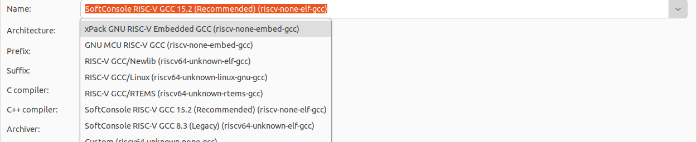

Migrating existing projects to SoftConsole v2022.2-RISC-V
Before you start
SoftConsole v2022.2-RISC-V ships two generations of toolchains. The GCC 15.2 toolchains are the recommended ones for new work, and the toolchains used by earlier SoftConsole releases are still included, so a project can keep the compiler generation it was written for. Imported toolchain paths and project settings may still need adjustment, and a debug launch configuration carried over from an earlier release needs review whichever compiler you build with.
This means an existing project has two routes for the build:
Keep using the toolchain generation the project was written for. This is the smallest change and a reasonable choice for a project that is already released or frozen.
Move the project to GCC 15.2. Newer compilers diagnose more problems and enforce rules that older compilers accepted silently, so a project may need a small number of build setting or source changes before it builds again.
Important
Keep two things separate when planning a migration.
Building and debugging migrate independently. Selecting a legacy toolchain addresses the build, and it does not carry a debug launch configuration forward. Launch configurations created by earlier SoftConsole releases predate the fpServer based debug flow and usually need attention whichever toolchain you build with, see Hardware debug configuration changes.
Selecting a legacy toolchain is also not a guarantee that a project builds untouched. It removes the compiler change as a cause, which is the most common one, but a project can still need attention for unrelated reasons such as an absolute toolchain path recorded in the project, stale excluded folders, or paths that only ever worked on one host operating system.
Note
The rest of this chapter describes problems that may appear. None of them applies to every project. Each section states the symptom first, so a change is only made where the matching symptom is actually seen.
How this chapter separates the two kinds of change
Two different kinds of change are described, and it is worth keeping them apart when deciding what to do with your own code:
Source changes. These are changes in the project’s own source files, in a hardware abstraction layer or in a driver. They are usually worth making in the upstream project as well, because the old code depends on behaviour that current compilers no longer provide.
SoftConsole settings. These are project settings stored in the SoftConsole project files, such as the selected toolchain, target processor options, excluded folders or launch configuration entries. They belong to the project as it is used in SoftConsole and are not changes to the upstream source code.
Sections below are marked accordingly.
Importing a project from an earlier SoftConsole release
Projects from earlier SoftConsole releases are imported in the normal way, see Importing general projects for the dialogs and the options. Nothing about the import itself is specific to SoftConsole v2022.2-RISC-V.
Two points are worth attention when the project comes from an older release:
Import into a new workspace rather than reusing a workspace created by an older SoftConsole release. A new workspace avoids carrying over stale metadata and indexes, and it leaves the old workspace untouched so you can go back to it.
Use a copy of the project, or make sure the original is in version control before you start. The changes described later in this chapter are small, but being able to compare against the unmodified project makes it much easier to see what actually had to change.
Tip
Build the project once, without changing anything, before starting any migration work. A clean build with the original toolchain confirms the import itself was fine, and it gives you a baseline to compare against.
Projects that reference an absolute toolchain path
A project created by an older release may record an absolute path to the toolchain it was built with, pointing into the old installation directory. If that installation is still present the project keeps using it, which can be confusing because the build then does not use SoftConsole v2022.2-RISC-V at all.
Check the configured toolchain path in:
The next section describes how to point the project at one of the toolchains that ship with SoftConsole v2022.2-RISC-V.
Choosing a toolchain
This is a SoftConsole setting. It does not change the project’s source code.
SoftConsole v2022.2-RISC-V bundles both toolchain generations:
Architecture |
Recommended for new projects |
Legacy toolchain also included |
|---|---|---|
RISC-V |
GCC 15.2 |
GCC 8.3 |
Arm |
GCC 15.2 |
GCC 10.3 |
The toolchain used by a build configuration is selected in:
The recommended entries are named so that they can be told apart at a glance,
for example SoftConsole RISC-V GCC 15.2 (Recommended). The list also holds the
legacy entry, SoftConsole RISC-V GCC 8.3 (Legacy):

Continuing with a legacy toolchain
Select the legacy toolchain entry for the architecture. The project then builds with the same compiler generation as before, so the compiler related items in Build settings and Source changes do not apply.
This is a supported configuration, not a workaround. It is the right choice when a project must not change, for example because its binary has already been qualified.
Two points to keep in mind:
It does not carry a debug launch configuration forward. See Hardware debug configuration changes.
It does not rule out every build problem. Project level issues such as an absolute toolchain path, stale excluded folders or host specific include paths are independent of the compiler version.
Moving a project to GCC 15.2
Select the recommended toolchain entry for the architecture, then rebuild the project from clean:
A clean build matters here. Object files and dependency files left from a build with a different compiler generation can produce confusing compile or link errors, so rebuild from clean after changing the toolchain.
If the build succeeds, continue by validating the application: run it on the target or in emulation, and check a debug session, as appropriate for the project. A successful build does not by itself confirm that the application behaves as before. If the build does not succeed, work through the sections below and match the actual error message against the symptoms described. Do not apply the changes speculatively.
Note
Each build configuration carries its own toolchain setting. A project with Debug and Release configurations, or with several board configurations, has to be switched for each configuration that you intend to build. It is valid to move one configuration to GCC 15.2 and leave another on the legacy toolchain while you work through the migration.
Switching back
The toolchain setting can be changed back at any time. Switch the setting to the legacy entry and clean build again. Source changes described in the next sections are written so that they also build with the older compilers, so a project does not become dependent on GCC 15.2 by being migrated.
Build settings that may need updating
These are SoftConsole settings. They do not change the project’s source code.
Control and status register instructions (Zicsr)
Symptom. Assembling or compiling code that accesses a CSR fails with a message similar to:
Error: unrecognized opcode `csrrs a5,mstatus,8', extension `zicsr' required
Why. The CSR instructions used to be part of the RISC-V base integer
instruction set. They were separated into their own Zicsr extension, and
since GCC 12 the base architecture alone no longer enables them. The
architecture string has to ask for the extension, for example rv32i_zicsr
instead of rv32i.
Which projects. RISC-V projects that read or write CSRs, which includes anything using the Mi-V HAL interrupt or timer code. It is not specific to any one base architecture.
Fix. Enable the CSR extension for each affected build configuration:
![digraph {
graph [rankdir="LR", ranksep=.01, bgcolor=transparent];
node [fontname="Verdana", fontsize="9", shape="rectangle", width=.1, height=.2, margin=".04,.01", style=filled, fillcolor=white];
edge [arrowsize=.7];
"Project Properties" -> "C/C++ Build" -> "Settings" -> "Tool Settings" -> "Target Processor" -> "Control and status register instructions (Zicsr)"
}](../_images/graphviz-934ad829bf08b2d44be4928e5c164b8d07bf65dc.png)
The generated architecture string can be confirmed in the build console output,
where -march= should now include _zicsr.
Assembler listings on Windows
Symptom. On Windows, a build that previously worked fails at the link step with:
collect2.exe: error: ld returned 5 exit status
There is usually no compiler error before it, which makes the failure look like a linker problem in the project.
Why. The listing option passes -Wa,-adhlns="$@.lst" to the toolchain, which
makes the assembler write a listing file next to each object file. With the
Windows toolchain build this can fail at the final link step. The listing is a
diagnostic aid and is not needed to produce a working binary.
Which projects. Windows hosts only, and only configurations that have the listing enabled. The same project builds correctly on Linux with the option left on.
Fix. The assembler and the compiler each have their own copy of this option, so clear both for the configuration:
![digraph {
graph [rankdir="LR", ranksep=.01, bgcolor=transparent];
node [fontname="Verdana", fontsize="9", shape="rectangle", width=.1, height=.2, margin=".04,.01", style=filled, fillcolor=white];
edge [arrowsize=.7];
"Project Properties" -> "C/C++ Build" -> "Settings" -> "Tool Settings" -> "GNU RISC-V Cross Assembler" -> "Generate assembler listing (-Wa,-adhlns="$@.lst")"
}](../_images/graphviz-f553cd651441b9bd4b4f0cc49f0334dab0e91e4f.png)
![digraph {
graph [rankdir="LR", ranksep=.01, bgcolor=transparent];
node [fontname="Verdana", fontsize="9", shape="rectangle", width=.1, height=.2, margin=".04,.01", style=filled, fillcolor=white];
edge [arrowsize=.7];
"Project Properties" -> "C/C++ Build" -> "Settings" -> "Tool Settings" -> "GNU RISC-V Cross C Compiler" -> "Generate assembler listing (-Wa,-adhlns="$@.lst")"
}](../_images/graphviz-eb7362314482252a83a41818cce915c66e5aaaf2.png)
Repeat for every configuration you intend to build on Windows. Clearing only one of the two leaves the option in effect for the other tool.
Note
This is a host side toolchain packaging issue rather than a defect in the
project. If you need a listing, build on Linux or produce one afterwards with
objdump instead of during the build.
Note
In the bundled example projects this is set in the project files themselves, so
the shipped examples build on Windows without any change. Three of the four carry
the setting: miv-rv32i-systick-blinky, mpfs-blank-baremetal and
mpfs-gpio-interrupt. For the corresponding upstream projects the suggested
change is to set option.c.compiler.asmlisting to false in .cproject for
every configuration, and option.assembler.asmlisting as well where the
configuration defines it, which is how the bundled copies are configured.
Excluded driver folders
Symptom. After importing an older project, the build fails because a driver source file cannot be found, or because a driver that should have been excluded is compiled and fails. In Project Explorer, folders that are meant to be excluded are not marked as excluded.
Why. SoftConsole projects exclude the driver folders that a particular build does not need, and the exclusion list is stored as a list of paths in the project file. If the driver tree has been reorganised since the project was created, the stored paths no longer match the folders that are actually there. Paths that match nothing are silently ignored, so the exclusion quietly stops working.
Which projects. Projects carried forward from an older release whose platform or driver directory layout has since been renamed or restructured.
Fix. Check the exclusions against the current source tree and set them again where they no longer match. A folder is excluded from a configuration with:
Select the configurations the exclusion should apply to. Repeat for each folder the build does not need.
Tip
It is easier to confirm this from the build output than from the project file. If a driver you believe is excluded appears in the compile lines, its exclusion is not taking effect.
Include paths and file names on Linux
Symptom. A project that builds on Windows fails on Linux with a missing header, even though the header is present in the source tree.
Why. Two differences between the hosts cause this. Windows file names are not case sensitive and Linux file names are, and a path written with backslash separators is a valid file name character on Linux rather than a directory separator. A header reference that works on Windows can therefore fail on Linux.
Which projects. Projects moved between hosts, or projects that were only ever built on Windows. See Include paths written with backslashes for the source side of the same problem.
Fix. Correct the include path so that the case matches the file on disk and forward slashes are used as separators. Include paths configured in the project are set in:
Source changes that may be needed
These are changes in the project’s own source, in a HAL or in a driver. Where a project is maintained upstream, the same change is usually worth making there, because the existing code relies on behaviour that current compilers no longer provide.
CSR renamed from mbadaddr to mtval
Symptom. Assembling startup code fails on a line that reads the faulting address CSR, for example:
csrr a1, mbadaddr
Why. The RISC-V privileged specification renamed this CSR to mtval. The
old name mbadaddr was accepted by older assemblers and is not recognised by
the current one.
Which projects. Code that reads the faulting address in a trap handler or
in startup code. In the bundled examples this appeared in the PolarFire SoC HAL
startup file mss_entry.S.
Fix. Use the current CSR name:
csrr a1, mtval
The register is the same, only the name changed, so the surrounding code does not need adjusting.
Interrupt enumeration causing multiple definition errors
Symptom. The build compiles but the link fails with multiple definition
errors naming MRV_LOCAL_IRQn_Type, once for each source file that includes the
HAL header, for example:
multiple definition of `MRV_LOCAL_IRQn_Type'; ./src/main.o:(.bss+0x0): first defined here
Why. The declaration in the header was written as:
enum
{
MIE_0_IRQn = (0x01u),
...
} MRV_LOCAL_IRQn_Type;
Without typedef this does not name a type. It declares a variable called
MRV_LOCAL_IRQn_Type of an anonymous enum type, so every translation unit that
includes the header defines its own copy. Older toolchains merged those
tentative definitions because they defaulted to -fcommon. GCC 10 and later
default to -fno-common, so the duplicates are now reported at link time.
Which projects. Mi-V projects using the Mi-V RISC-V HAL header. Of the
bundled examples this affected miv-rv32i-systick-blinky, in
src/platform/miv_rv32_hal/miv_rv32_hal.h.
Fix. Add the missing typedef so the name becomes a type rather than a
variable:
typedef enum
{
MIE_0_IRQn = (0x01u),
...
} MRV_LOCAL_IRQn_Type;
That is the whole change, one keyword. No other code needs adjusting, because the enumerator names and values are unchanged and the name was not being used as a variable anywhere.
Tip
Adding -fcommon to the compiler options also makes the link succeed, but it
restores the older behaviour rather than fixing the declaration. The typedef
is preferred, and it still builds with the legacy toolchains.
BootROM helper compiled for a legacy core
Symptom. Compiling the Mi-V HAL fails in MRV_BootROM_reconfigure(), on the
BOOTROM_START, BOOTROM_END or BOOTROM_DEST register definitions, which the
legacy core’s headers do not provide.
Why. The BootROM reconfiguration registers exist on current MIV_RV32 cores
and not on the older legacy RV32 cores. The HAL distinguishes the two with the
MIV_LEGACY_RV32 symbol, which a project defines when it targets a legacy core.
If the helper is compiled unconditionally it fails for those projects.
Which projects. Mi-V projects that define MIV_LEGACY_RV32. In the bundled
examples the guard is in src/platform/miv_rv32_hal/miv_rv32_hal.c.
Fix. Guard the helper so it is only compiled when the project is not targeting a legacy core:
#ifndef MIV_LEGACY_RV32
void MRV_BootROM_reconfigure(uint32_t start_addr, uint32_t end_addr, uint32_t destination_addr)
{
HW_set_32bit_reg(BOOTROM_START, start_addr);
HW_set_32bit_reg(BOOTROM_END, end_addr);
HW_set_32bit_reg(BOOTROM_DEST, destination_addr);
}
#endif /* MIV_LEGACY_RV32 */
The same MIV_LEGACY_RV32 symbol already guards other sections of the HAL, so
this follows the pattern the file uses elsewhere rather than introducing a new
one.
Note
MIV_LEGACY_RV32 is set in the project’s build settings, under
![digraph { graph [rankdir="LR", ranksep=.01, bgcolor=transparent]; node [fontname="Verdana", style=filled, fillcolor=white, fontsize="9", shape="rectangle", width=.1, height=.2, margin=".04,.01"]; edge [arrowsize=.7]; "Project Properties" -> "C/C++ Build" -> "Settings" -> "Tool Settings" -> "GNU RISC-V Cross C Compiler" -> "Preprocessor" -> "Defined Symbols"; }](../_images/graphviz-bb952c1547dd17795d2ae6a2d0eebd27634f201c.png)
Check whether your project defines it before deciding that this section applies.
(migratinglibero)=
### Code that depends on a Libero configuration symbol
**Symptom.** A build fails in PolarFire SoC HAL I/O configuration code because
a Libero setting the code expects is not defined by the project's configuration
headers.
**Why.** The HAL adapts to the design through generated configuration headers.
When a project's generated configuration does not define a particular setting,
code that uses it unconditionally does not compile.
**Which projects.** PolarFire SoC projects whose generated configuration does
not contain the setting. In the bundled examples this affected the I/O
configuration in `mss_io.c`.
**Fix.** Wrap the dependent code so that the alternative path is used when the
setting is absent, for example:
```c
#ifdef LIBERO_SETTING_ALT_IOMUX1_CR
/* configuration that uses the alternate setting */
#else
io_mux_and_bank_config();
#endif
Include paths written with backslashes
Symptom. A header include fails on Linux while the same project builds on Windows.
Why. A backslash is a normal file name character on Linux, not a directory
separator, so #include "hal\hal.h" asks for a file whose name contains a
backslash.
Which projects. Drivers and HAL headers written on Windows. In the bundled examples this appeared in several Mi-V fabric IP driver headers.
Fix. Use forward slashes, which work on both hosts:
#include "hal/hal.h"
Missing standard includes
Symptom. A compile error about an unknown fixed width integer type such as
uint32_t, in a file that previously compiled.
Why. Standard library headers include each other less than they used to, so a file that relied on getting a type indirectly now has to include the header that defines it.
Which projects. Any project, C or C++. In the bundled examples this affected one C++ application source file.
Fix. Include the header explicitly:
#include <stdint.h>
Hardware debug configuration changes
These are SoftConsole settings stored in the launch configuration. They do not change the project’s source code.
SoftConsole v2022.2-RISC-V debugs FlashPro attached targets through fpServer, which owns the connection to the programmer, with OpenOCD connecting to it. Launch configurations created by earlier SoftConsole releases predate this and drive the programmer differently, so an imported launch configuration usually needs attention.
Reviewing an imported launch configuration
Open the launch configuration in:
Check the following on the Debugger tab:
fpServer startup. SoftConsole v2022.2-RISC-V can start fpServer automatically as part of the launch. An imported configuration does not have this enabled, because the option did not exist when it was created.
Programmer selection commands. Older configurations issue commands in the startup sequence to list the available programmers and select one by serial number. These belong to the earlier programmer handling and should be removed, because the programmer is now selected before the session starts.
OpenOCD configuration files. Confirm the interface and target configuration files named in the launch still exist in this release.
Tip
The quickest route for a project that has an equivalent bundled example is to start from the example’s launch configuration and point it at your own ELF file, rather than repairing an old launch configuration entry by entry.
Selecting which programmer to debug with
When more than one FlashPro programmer is attached, the one used for debugging
is selected from the SoftConsole toolbar. The selector lists the programmers
that were found and remembers the choice for the workspace, and Refresh
re-runs the detection after a programmer is attached or removed.
Note
The toolbar selection applies to debugging. It does not change which programmer any programming tool uses.
Scope of the fpServer integration in this release
fpServer runs on the same machine as SoftConsole and connects to a locally attached FlashPro programmer. Debugging a programmer attached to a different machine is not part of SoftConsole v2022.2-RISC-V.
If a project still does not build
Work through these in order. They are ordered so that the cheapest checks that rule out whole classes of problem come first.
Clean build. Object and dependency files left from a build with a different compiler generation can cause misleading errors. Run
and build again before investigating anything else.
Confirm which toolchain was actually used. The build console prints the compiler that ran. If it is not the one you selected, the configuration you changed is not the configuration you built, or the project still points at an absolute toolchain path.
Read the first error, not the last. A single early error often produces a long tail of unrelated messages.
On Windows a link error can be the only visible symptom of an assembler setting, see Assembler listings on Windows where that applies.
Check the architecture string. For RISC-V, confirm the
-march=value in the build output matches the target, including_zicsrif CSRs are used, see Control and status register instructions (Zicsr).Compare against a bundled example. If a bundled example targets the same device and builds correctly, compare its target processor and toolchain settings with your project. This is usually faster than reasoning about the settings in isolation.
Fall back to the legacy toolchain. Switching the configuration back to the legacy toolchain tells you whether the failure is caused by the compiler change or by something else in the project. This is a useful diagnostic even if you intend to migrate.
If a problem remains after these steps, see Getting support for what to collect and where to report it.